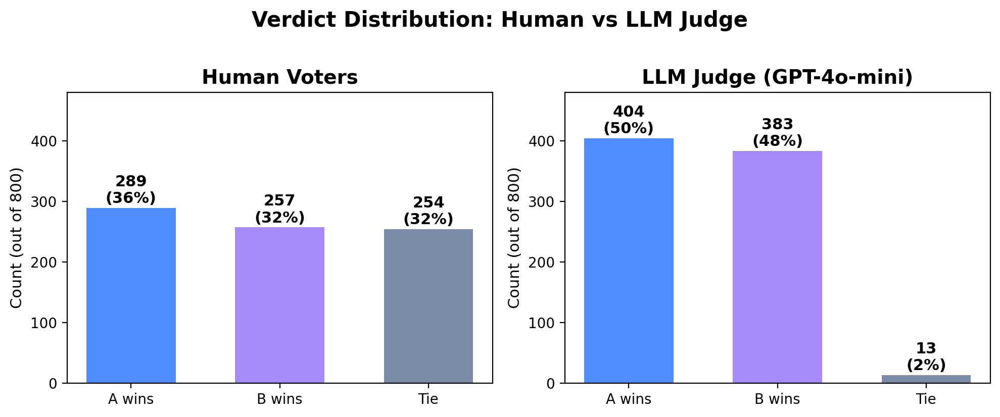

MIE1512 — Data Infrastructure & Analytics
Can LLM Judgment Capture
Human Preference?
An Alignment Study Between Automated and
Human Evaluation of LLM Task Performance
Yifan Liu | 1007341681
Department of Mechanical and Industrial Engineering, University of Toronto
Instructor: Prof. Mariano P. Consens
March 2026
Motivation: Evaluating LLM Output Quality
User: "Write a short bedtime story for my 5-year-old about a brave bunny."
Model A: "Once upon a time, a little bunny named Boo heard a noise in the dark. His heart went thump-thump, but he hopped outside anyway. It was just the wind! Boo smiled and went back to sleep. The end."
Model B: "In the enchanted meadows of Willowbrook, a courageous young rabbit named Bartholomew embarked upon a perilous nocturnal expedition..." (300 more words)
A parent would prefer A (simple, warm, age-appropriate). An LLM judge might prefer B (more detailed, "creative"). Who is right?
Gold standard: Human evaluation via crowdsourcing — real users compare two LLM responses and vote for the one they prefer. But this is slow, expensive, and hard to scale.
Alternative: Use a strong LLM (e.g., GPT-4) as an automated judge to score other LLMs' outputs. Existing work reports Pearson r = 0.95 with human evaluation — an unexpectedly high number.
Is r = 0.95 generalizable? Does this hold uniformly across all task types — coding, math, creative writing, translation — or does the agreement break down for certain categories?
Research Question
Can an LLM judge's evaluation of LLM task performance
align with human stated preferences
across different task categories?
LLM Judge
GPT-4-turbo evaluates
LLM outputs via checklists
(WildBench)
Human Preference
Real users vote on which
LLM response they prefer
(Chatbot Arena)
Task Categories
Coding, Math, Writing,
Translation, Reasoning...
(WildBench taxonomy)
Method Background: LLM-as-Judge
Lin et al., "WildBench: Benchmarking LLMs with Challenging Tasks from Real Users in the Wild," ICLR 2025 Spotlight
How It Works
"Write a short bedtime story for my 5-year-old about a brave bunny."
GPT-4-turbo creates task-specific criteria:
- Is the language age-appropriate for a 5-year-old?
- Does the story have a clear narrative arc?
- Is the bunny character portrayed as brave?
- Is it an appropriate length for bedtime?
GPT-4-turbo evaluates the LLM response against each item and assigns a final score.
Dataset & Scale
1,024 real-user tasks from WildChat, classified into 12 task categories:
60+ LLMs evaluated using GPT-4-turbo as judge
Reports Pearson r = 0.98 with Chatbot Arena Elo at the aggregate model level (14 data points)
Two Scoring Methods
WB-Score (Pointwise)
Rate a single response on a 1-10 scale against the checklist.
Prompt: "Write a bedtime story for a 5-year-old..."
Model A's story → evaluated against 4 checklist items
Score: 5/10 — age-appropriate but lacks narrative depth
Gives an absolute quality measure for each model on each task.
WB-Reward (Pairwise)
Compare two responses head-to-head. Five possible outcomes:
Model A (simple story) vs Model B (elaborate story)
Verdict: B is "Much Better" — more detailed, richer narrative
(But a human parent might disagree...)
Scoring Example: Where LLM Judge and Human Disagree
"Write a short bedtime story for my 5-year-old about a brave bunny."
Model A — human's pick
"Once upon a time, a little bunny named Boo heard a noise in the dark. His heart went thump-thump, but he hopped outside anyway. It was just the wind! Boo smiled and went back to sleep. The end."
LLM judge checklist:
✓ Age-appropriate language? Yes
✗ Rich narrative structure? Too simple
✗ Detailed world-building? No
✓ Clear resolution? Yes
WB-Score: 5 / 10
Model B — LLM judge's pick
"In the enchanted meadows of Willowbrook, a courageous young rabbit named Bartholomew embarked upon a perilous nocturnal expedition..." (300 words)
LLM judge checklist:
~ Age-appropriate language? Too advanced
✓ Rich narrative structure? Yes
✓ Detailed world-building? Yes
✓ Clear resolution? Yes
WB-Score: 8 / 10
The disagreement: The LLM judge picks B (more detailed, higher checklist score). The human parent picks A (simple, warm, actually suitable for a 5-year-old). The checklist favors complexity over fitness-for-purpose.
Dataset: Chatbot Arena — Human Preference Benchmark
Chiang et al., "Chatbot Arena: An Open Platform for Evaluating LLMs by Human Preference," ICML 2024
How It Works
1.7M+
votes
57K
with full text
64
models
Elo Rating: From Votes to Rankings
Recall our bedtime story example. Suppose across many battles:
GPT-4 wins against Llama-2 in 80% of matchups
GPT-4 wins against Claude-3 in 55% of matchups
Claude-3 wins against Llama-2 in 70% of matchups
Elo converts these pairwise win rates into a single score per model using the Bradley-Terry formula:
P(A beats B) = 1 / (1 + 10(Elo_B − Elo_A) / 400)
GPT-4
1235
Claude-3
1103
Llama-2
1007
Higher Elo = humans preferred this model's responses more often overall.
Our Approach
We apply the LLM judgment method to Chatbot Arena's human preference data and compare the two verdicts.
1. LLM-as-Judge on Arena Battles
For each Arena battle, we feed the same prompt + response A + response B to an LLM judge and ask: which is better?
Each battle now has two verdicts:
Human vote: A wins / B wins / Tie
LLM judge: A wins / B wins / Tie
We measure: how often do they agree?
2. Task Category Breakdown
We classify each Arena prompt into task categories using keyword matching:
"Write python code..." → Coding
"Solve this integral..." → Math
"Translate to French..." → Translation
"Write me a poem..." → Creative Writing
Then compute agreement rate per category — not just overall.
Part III
Results
Existing Result: Model-Level Correlation
Reported Correlation
| Comparison | Pearson r |
|---|---|
| WB-Reward vs Arena Elo (top 6) | 0.984 |
| WB-Reward vs Arena Elo (all 14) | 0.973 |
| WB-Score vs Arena Elo (all 14) | 0.940 |
From WildBench Table 3 (Lin et al., 2025)
Limitation
Model-level, not prompt-level.
Each model gets one overall WB-Score and one Elo. The correlation is computed across just 14 data points.
This mainly captures cross-model differences — every benchmark agrees GPT-4 > Llama-2. The large gaps inflate the number.
It tells us nothing about agreement on individual prompts or specific task types.
Our Result: Prompt-Level Agreement by Task Category
LLM judge evaluated 100 Arena battles per category. Agreement = both human and judge pick the same winner.

Easy to judge (objective tasks)
Math 56% "Solve: ∫x²dx" — one answer is correct, the other is wrong. Both human and judge agree.
Info Seeking 56% "What is the capital of Australia?" — factual, verifiable. Easy to spot the better response.
Hard to judge (subjective tasks)
Creative Writing 37% "Write a poem about loneliness" — is a short, raw poem better than a long, polished one? Humans pick by feeling; LLM judges pick by structure.
Translation 43% "Translate to French" — subtle fluency and cultural nuance that the LLM judge (English-centric) may not capture.
Overall: 49.2% agreement (random = 33%). The LLM judge is useful, but its reliability depends heavily on task type.
Analysis: Different Decision Patterns
Humans and LLM judges don't just disagree on individual battles — they have fundamentally different decision-making distributions.


Humans are more conservative: they say "Tie" 31.8% of the time (254/800). When both responses seem comparable, humans are comfortable saying neither is clearly better.
LLM judges are more decisive: they say "Tie" only 1.6% of the time (13/800). The judge almost always picks a winner — even on battles where humans see no meaningful difference.
Ongoing & Future Work
Ongoing
1. Full-scale study
Scale the LLM judge evaluation from the current 800-battle pilot to the full 57,477 battles in the Arena dataset for statistically robust per-category results.
2. Improved categorization
Current keyword-based classification is limited (59.6% of prompts fall into "Other"). Planned improvement: combine keyword matching + vector similarity using sentence embeddings to classify ambiguous prompts into the nearest task category.
Future Directions
3. Judge scaling law
Does a larger judge model align better with humans? Compare GPT-4o-mini vs GPT-4-turbo vs Claude 3.5 as judge to test whether scaling the judge improves human agreement.
4. Elo gap analysis
Analyze agreement as a function of Elo gap between the two models in each battle. Hypothesis: the LLM judge agrees with humans more on "easy" battles (large Elo gap, e.g., GPT-4 vs Llama-2) than "hard" battles (close Elo, e.g., GPT-4 vs Claude 3).
Summary
Question: Can LLM judgment capture human preference across task categories?
Finding 1: At the prompt level, agreement ranges from 56% (math, info seeking) to 37% (creative writing) — far below the r = 0.95 aggregate correlation.
Finding 2: LLM judges and humans have different decision patterns — humans are conservative (32% ties), while LLM judges are decisive (1.6% ties).
Finding 3: Agreement is higher on objective tasks (math, coding, info seeking) and lower on subjective tasks (creative writing, role-playing, translation).
LLM judges can partially substitute for human evaluation on objective tasks,
but should not be trusted for subjective tasks.
Thank you — Questions?